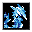

DCSS スポイラー
入口
モンスター
呪文
アイテム
固定アーティファクト
種族
職業
神
ダンジョン
変異
事典
wiki 翻訳
氷造形の魔法書
Book of Cryoformation
英語版 CrawlWiki の記事「
Book of Cryoformation
」(0.34 向け、2026-05-19 版)の翻訳です。原文の著者は
編集履歴
をご覧ください。
氷造形の魔法書
主な系統
氷
氷を実用的な形にも芸術的な形にも造形するための、図解入りの手引書だ。まるまる一章が、鉱物の不純物とそれが色や融点に及ぼす影響の表に割かれている。
呪文
タイル
呪文
系統
レベル
a -
霧氷の砲撃
鍛造術
/
氷
5

b -
幻像の造形
錬金術
/
氷
6
c -
砕氷の砲弾
鍛造術
/
氷
7
変更履歴
この魔法書は
0.33
で追加された。